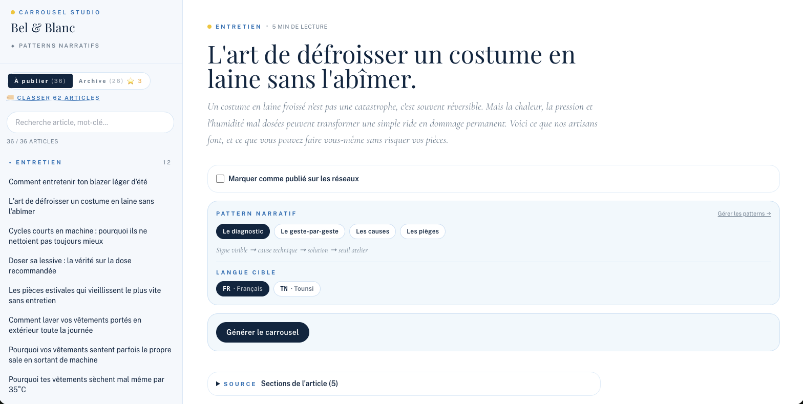
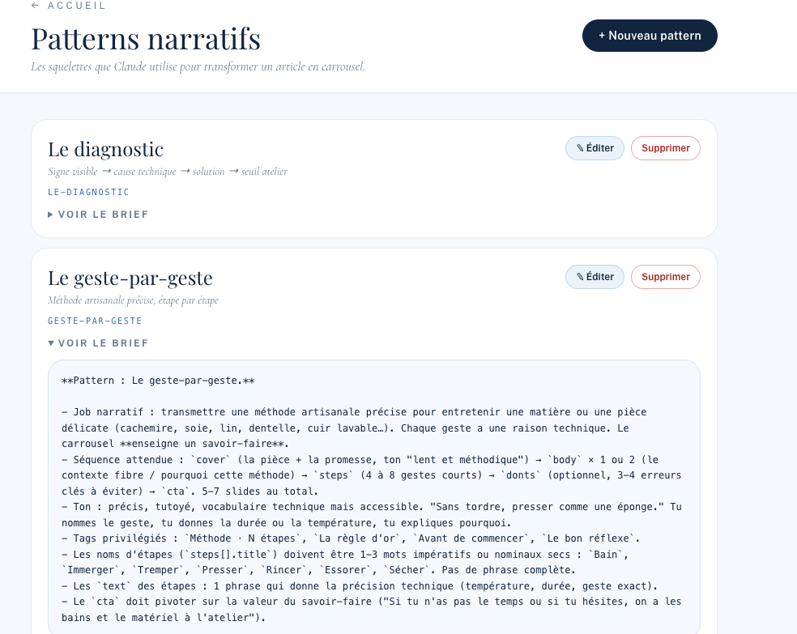
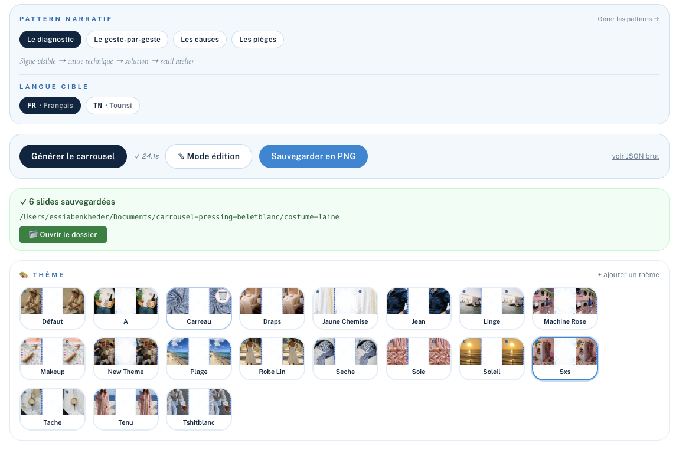
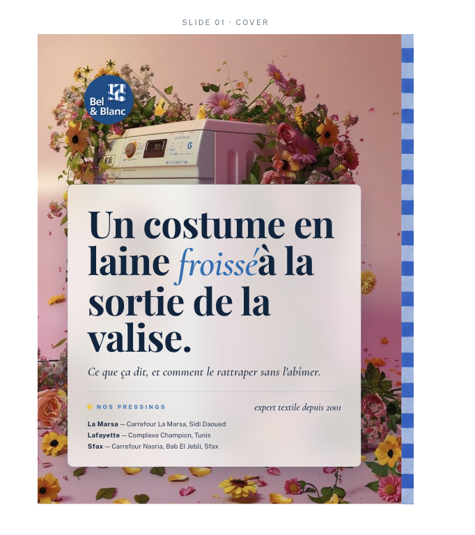
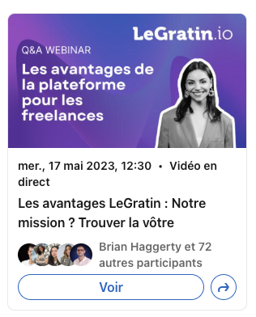
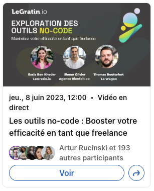
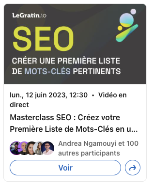
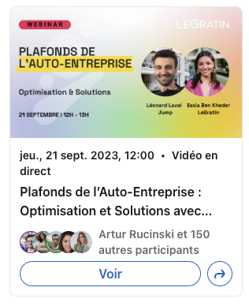

Rappel de la méthode
Situation : le contexte en une phrase. Tâche : ce qu'on attendait de moi. Action : ce que j'ai fait, moi, avec des verbes concrets (c'est la partie la plus longue). Résultat : le chiffre ou l'impact, puis ce que j'en retiens.
Une histoire = 1 min 30 à 2 min. Dire « je » plutôt que « on ». Les zones en rose sont à compléter avec tes vrais chiffres avant l'entretien, sinon les dire de façon qualitative.
Pitch d'ouverture (60 secondes)
Je suis Essia, profil créatif et hands-on. Depuis 2024, je conçois, scripte, tourne et monte des contenus social-first pour des marques beauté et pharma comme Nuxe, Pierre Fabre ou Blissim, en direct avec leurs équipes brand. Avant ça, j'ai passé trois ans chez LeGratin.io, startup SaaS à Station F, où j'ai construit la stratégie éditoriale et créative de zéro, jusqu'à +20 000 utilisateurs en organique et une contribution à une levée de 1,5 M€. Mon parcours a commencé en agence, avec des concepts de campagnes pour Bonne Maman ou L'Or Espresso. Ce qui me définit : je passe du concept à la vidéo publiée en autonomie, je m'appuie sur la data pour objectiver les choix créatifs, et j'utilise l'IA au quotidien, au point d'avoir codé ma propre app de génération de carrousels, que j'adapte à chaque client.
Histoire A · Production de bout en bout pour Nuxe
Pour : « Parlez-moi d'un projet créatif dont vous êtes fière », « Comment travaillez-vous avec une marque ? »
S
En freelance depuis 2024, Nuxe me confie la production de contenus vidéo en 2025, une marque prestigieuse avec des codes de marque exigeants.
T
Livrer des vidéos social-first fidèles à la DA Nuxe, du concept à la vidéo finale, en coordination directe avec l'équipe brand.
A
J'ai fait la veille des codes et tendances du moment, proposé les concepts, écrit les scripts, dirigé les tournages, puis monté les vidéos. J'ai intégré les retours de l'équipe brand à chaque étape.
R
5 à 6 vidéos produites en 2025, une relation suivie avec la marque. [résultat à préciser : vues, engagement, retour client, réutilisation en ads ?]
Histoire B · Carrousel Studio, mon outil IA maison
Pour : « Comment utilisez-vous l'IA ? », « Un exemple d'innovation », « Comment produire du volume sans perdre la qualité ? ». C'est ton histoire la plus différenciante : propose de montrer l'écran.
S
Mes clients freelance avaient besoin de carrousels réguliers sur les réseaux, chacun avec sa propre voix et sa propre DA. Produits à la main, un par un, c'était long et difficile à tenir dans la durée. Exemple : Bel & Blanc, pressing artisanal à Tunis depuis 2001, trois ateliers (La Marsa, Lafayette, Sfax).
T
Mettre en place une chaîne de contenu complète et réutilisable : des articles de fond, puis des carrousels social-first fidèles à chaque marque, produits vite et sans perte de qualité.
A
- Le contenu source : je rédige les articles de blog experts sur lesquels l'outil s'appuie (62 articles pour Bel & Blanc, avec la voix de l'artisan : « précis, factuel, technique mais accessible »).
- Un template d'app que j'ai conçu et codé en JavaScript avec Claude, puis que j'adapte à chaque client : DA, typographies, thèmes visuels, ton, patterns narratifs, langues.
- Des patterns narratifs que j'écris moi-même, par exemple pour Bel & Blanc : Le diagnostic (signe visible → cause technique → solution → seuil atelier), Le geste-par-geste, Les causes, Les pièges. Chacun est un brief précis (séquence de slides, ton, tags, CTA) que Claude suit.
- Les fonctions : choix de la langue (français et tounsi chez Bel & Blanc), une vingtaine de thèmes visuels, un mode édition pour retoucher chaque slide, un export PNG direct et un suivi « à publier / archivé ».
R
L'app tourne en production chez [nombre] clients. Un carrousel de 6 slides se génère en environ 25 secondes, puis je le relis et l'ajuste. Chez Bel & Blanc : 62 articles classés, 36 à publier, 26 en archive. [à confirmer : 26 = déjà publiés ? + engagement des carrousels] Ce que j'en retiens : je maîtrise toute la chaîne, de l'article au carrousel publié. L'IA fait le gros du travail de déclinaison, la stratégie (patterns, ton, DA) et le regard final restent les miens.
Phrase à placer : « J'ai construit un template que j'adapte à chaque client. J'écris les articles et les règles narratives, Claude les applique. Je consacre mon temps à l'angle et à la DA. »
Captures à montrer si tu partages ton écran (dossier assets-entretien) :




Histoire C · La stratégie créative de LeGratin.io
Pour : « Un résultat mesurable », « Comment reliez-vous créa et performance ? », « Construire de zéro ».
S
LeGratin.io, startup SaaS B2B à Station F, sans stratégie de contenu à mon arrivée en 2021.
T
Construire la marque et acquérir des utilisateurs en organique, avec peu de budget.
A
J'ai posé la ligne éditoriale et la direction artistique, refondu le site, piloté les vidéos internes et mené 50+ interviews d'experts. J'ai lancé un format de webinars en LinkedIn Live (30+ produits) : je choisis les sujets, je recrute des intervenants partenaires (Le Wagon, Jump, Agence Bienfait.co), je crée les visuels et j'anime en direct. J'ai suivi CAC et conversion sur Looker Studio pour garder ce qui marchait.
R
+20 000 utilisateurs acquis en organique, contribution directe à la levée de 1,5 M€, passage au CODIR. LeGratin.io a ensuite été intégrée au groupe Nexoris.
Exemples de webinars LinkedIn Live (2023)
| Date | Sujet | Intervenants |
|---|
| 17 mai 2023 | Q&A : les avantages de la plateforme pour les freelances | Essia (LeGratin.io) |
| 8 juin 2023 | Exploration des outils no-code pour freelances | Essia, Simon Olivier (Agence Bienfait.co), Thomas Bouttefort (Le Wagon) |
| 12 juin 2023 | Masterclass SEO : créer une première liste de mots-clés | LeGratin.io |
| 21 sept. 2023 | Plafonds de l'auto-entreprise : optimisation et solutions | Essia, Léonard Laval (Jump) |
Angle Creative Strategist : un format récurrent, une identité visuelle propre à chaque série, des partenariats avec des marques connues pour élargir l'audience.




Histoire D · Concepts de campagnes grande conso (KaliKado)
Pour : « Un exemple de concept créatif », « Travailler sur plusieurs marques en parallèle ».
S
Agence KaliKado, spécialisée sampling, avec des clients comme Groupe Andros (Bonne Maman, Mamie Nova), L'Or Espresso, L'Arbre Vert, FDJ.
T
Imaginer et piloter des concepts de campagnes multicanal, du pitch au bilan.
A
J'ai conçu les concepts, préparé et présenté les pitchs, piloté la production et rédigé les bilans de campagne. [choisir une campagne précise à raconter]
R
[résultat de la campagne choisie : marque retenue, gain du pitch, chiffres du bilan]
Histoire E · Un retour difficile ou un désaccord
Question presque sûre en entretien. Choisis un vrai cas (Nuxe, Pierre Fabre, LeGratin) et prépare-le sur ce schéma.
S
[le projet et le retour reçu]
T
Tenir la qualité créative tout en respectant le besoin de la marque et le délai.
A
J'écoute, je reformule le besoin, je propose deux pistes argumentées (avec données ou exemples qui performent), on tranche ensemble.
R
[issue concrète] + ce que j'ai changé dans ma méthode depuis.
Questions probables et histoire à utiliser
| Question | Histoire |
|---|
| Présentez-vous | Pitch 60 s |
| Un projet dont vous êtes fière | A (Nuxe) |
| Votre rapport à l'IA | B (Carrousel Studio) |
| Créa et performance, comment les relier ? | C (LeGratin) |
| Comment trouvez-vous vos idées ? | Veille : Tendanciales, TikTok Creative Center, Google Trends, Pentos + A |
| Un concept que vous avez imaginé | D (KaliKado) |
| Un échec, un conflit, un retour négatif | E |
| Pourquoi un CDI après le freelance ? | Envie de s'inscrire dans la durée sur une marque, de suivre les résultats et de grandir avec une équipe |
Questions à poser
- Comment se répartit le temps entre stratégie, conception et production sur ce poste ?
- Comment mesurez-vous la réussite d'un contenu ou d'un concept créatif ?
- Avec qui je travaillerais au quotidien (média, brand, créateurs, clients) ?
- Quelle place prend l'IA dans la production créative aujourd'hui chez vous ?
- À quoi ressembleraient mes trois premiers mois réussis ?